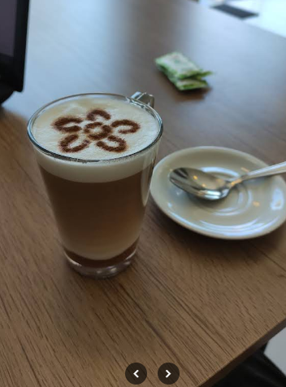
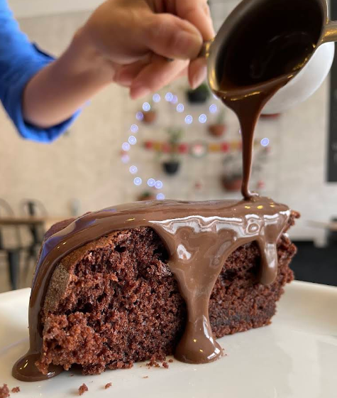
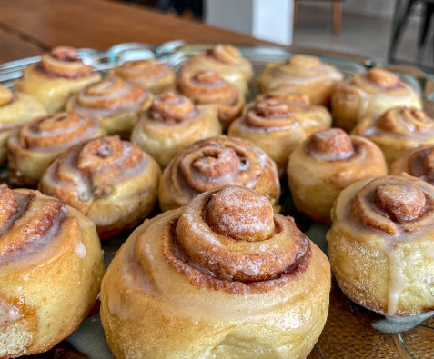
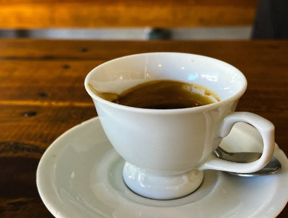
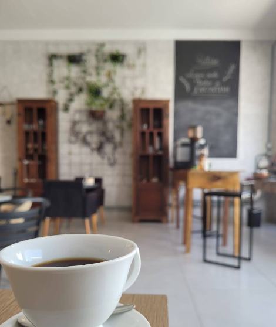
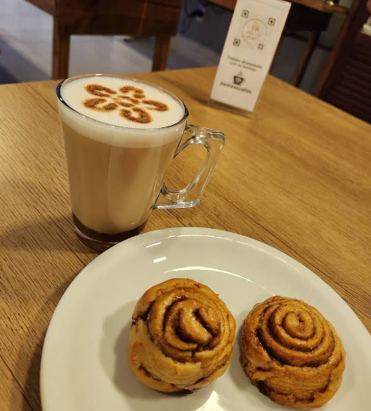
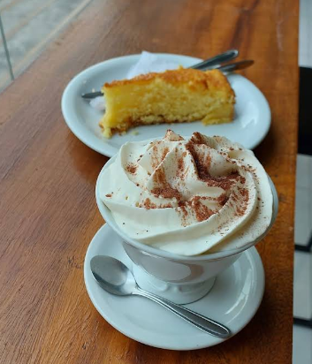

Cafés
Cafés & Bebidas
Preparos quentes e gelados para começar o dia ou dar pausa no meio da tarde.
R. Cap. Neco, 424 — Centro
Cafés especiais, chás, sobremesas e lanches rápidos em um espaço descontraído, com Wi-Fi, opção pet friendly e atendimento no balcão, retirada ou entrega.

Ambiente calmo para conversar, ler, estudar ou trabalhar com notebook usando Wi-Fi gratuito.
Consumo no local, retirada rápida ou entrega, com área externa e espaço pet friendly.
Entrada e assentos acessíveis, sanitário unissex, estacionamento gratuito na rua e pagamentos digitais.
Seleção da Casa

Preparos quentes e gelados para começar o dia ou dar pausa no meio da tarde.

Opções doces pensadas para acompanhar cafés, cappuccinos e momentos especiais.

Seleção de chás e lanches rápidos para uma parada leve a qualquer hora do expediente.
Exemplos de Clientes


"Cafés com notas e metodos para todos os gostos desde um abraço quentinho para dias solitarios até aquele Punch para iniciar bem a semana, sempre apresentando novos grãos e torras de café proporcionando experiencias incriveis com cada sabor inedito disponivel!"


"O ambiente é moderno e confortável, com ótimo espaço de circulação. Recebemos um excelente atendimento: bastante atenção na apresentação e descrição dos itens do cardápio."


"Sempre uma delícia, cafeteria muito bonita, ambiente gostoso, ótimo cardápio várias opções, para quem gosta de café, é o lugar certo. As opções para acompanhar, também são uma delícia, o bolinho feito no dia ou o cinamon, tem que experimentar!!!"
Onde Estamos
Seg a Sex: 09h30 às 19h • Sáb: 09h30 às 12h • (12) 98822-3177